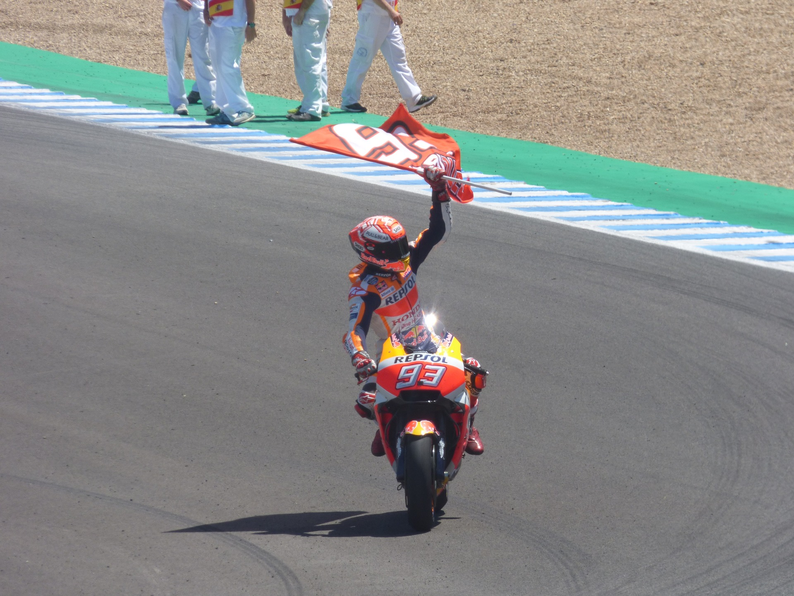

Premis
En la seva llarga carrera esportiva, no només ha conseguit premis en l'activitat del motociclisme, tambè ha obtingut premis en altres camps. LListem els premis més importants obtinguts fins l'actualitat.
Exposicions
Entre el 2012 i el 2013 el Museu Comarcal de Cervera li va dedicar una exposició commemorativa, amb el títol 93 Marc Márquez. Espai expositiu.